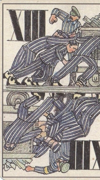
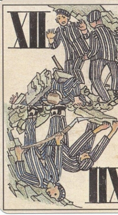
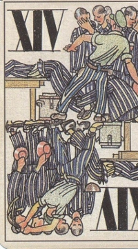
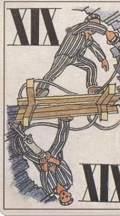
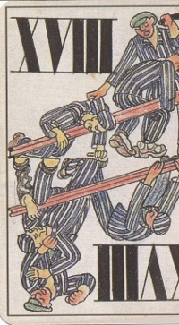
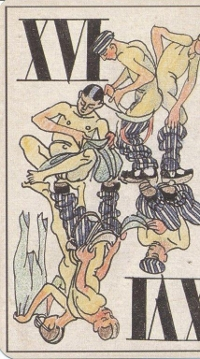
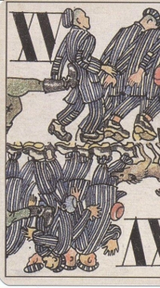

|  |
Die Kipploren mussten zum Seeufer geschoben und das aufgeladene Material
ausgekippt werden. Wenn eine Lore entgleiste, was häufig geschah,
musste sie auf Kommando gemeinsam wieder auf die Schienen gehoben werden. |
|  |
Immer wieder gab es Felsabbrüche im Stollen, bei denen viele Häftlinge
den Tod fanden. |
|  |
Wenn einer die Lagerdisziplin nicht einhielt, wurde er grausam bestraft.
Die Kameraden mussten bei der Prügelei zusehen. |
|  |
Der Einsatz des mit Druckluft betriebenen Presslufthammers erfordert
viel Kraft. |
|  |
Manchmal wurde für spezielle Aufgaben noch eine Zusatzarbeit nach der
Zwölfstundenschicht von den völlig erschöpften Häftlingen verlangt. Zum
Beispiel mussten Gleise verlagert oder Kohlen am Bahnhof abgeladen werden. Diese
Zusatzarbeit wurde mit zusätzlichen Prügeln erzwungen. |
|  |
Sonntags war "Lausappell". Bis zum Frühjahr 1945 konnte die Läuseplage
noch bewältigt werden. Ab Ende März/Anfang April 1945 wurden die Häftlinge
von den Läusen fast überwältigt. Auf der Darstellung sind die in die
Frisur hineingeschorenen "Lagerstraßen" deutlich erkennbar. Sie waren
ein Kennzeichen
für besonders streng behandelte Häftlinge. |
|  |
Während des Marsches vom Lager zum Stollen am Westbahnhof (heute Bahnhof
Therme) gab es Fußtritte durch SS-Männer und Hundebisse.
Wenn man beiseite blickte, wurde man mitdem Gewehrkolben in den Rücken
gestoßen. Die Aluminiumschüssel für das Essen trug man auf dem Rücken. |